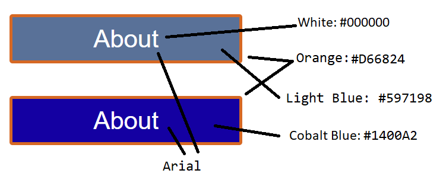

Visual Design Guide

The important colors for the redesigned website are the same that are used on the old website. Here are the following signature colors: Cobalt Blue: #1400A2, Orange: #D66824, Light Blue: #597198, White: #000000, and Grey: #A29797. All of the buttons should on hover turn Grey, but have original color Cobalt Blue with an Orange Border. Title should follow the same schematics, but it does not change color on hover. The delicious has font family Bodoni MT Black, Buttons have font family Arial, and the title has font family Century.